WEB 3.0: Web décentralisé
Présenté par: @JaafarBAK
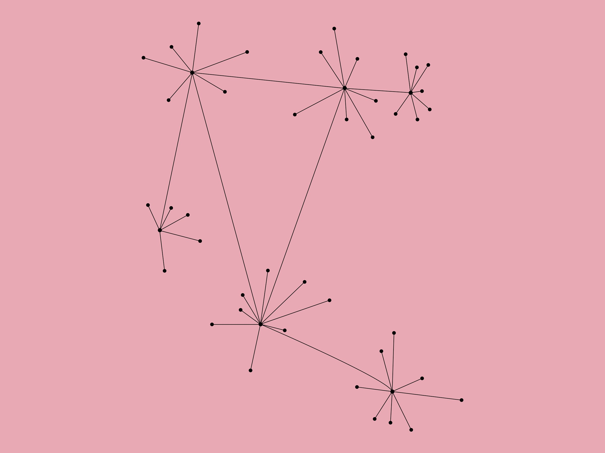
WEB 3.0 ?
Historiquement, le Web 3.0 est une expression qui désigne la troisième étape en cours des transformations majeures dont le Web fait l'objet depuis son lancement .
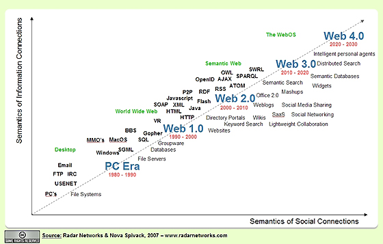
Certains futurologues vont même jusqu'à définir le Web 4.0 en concordance avec leur définition du Web 3.0. Toutefois, les numéros au-delà de 3 sont pris avec peu de sérieux.
- Le WEB 1.0 est constitué de pages web liées entre elles par des hyperliens, c'est essentiellement la naissance de l’internet créé au début des années 1990
- Le Web 2.0 est le Web social, qui s'est généralisé avec le phénomène des services qu’on connait et qu’on utilise tous des réseaux sociaux, des blogs ...
Certains futurologues vont même jusqu'à définir le Web 4.0 en concordance avec leur définition du Web 3.0. Toutefois, les numéros au-delà de 3 sont pris avec peu de sérieux.
Limites du Web 2.0
Monopolie du marché:
En effet les géants de l’internet dont GAFA fait partie dominent actuellement et contrôle presque en totalité l’internet. tout le trafic passe par google microsoft facebook ... Et cela est un risque pour un marché sain et une menace pour l’innovation.
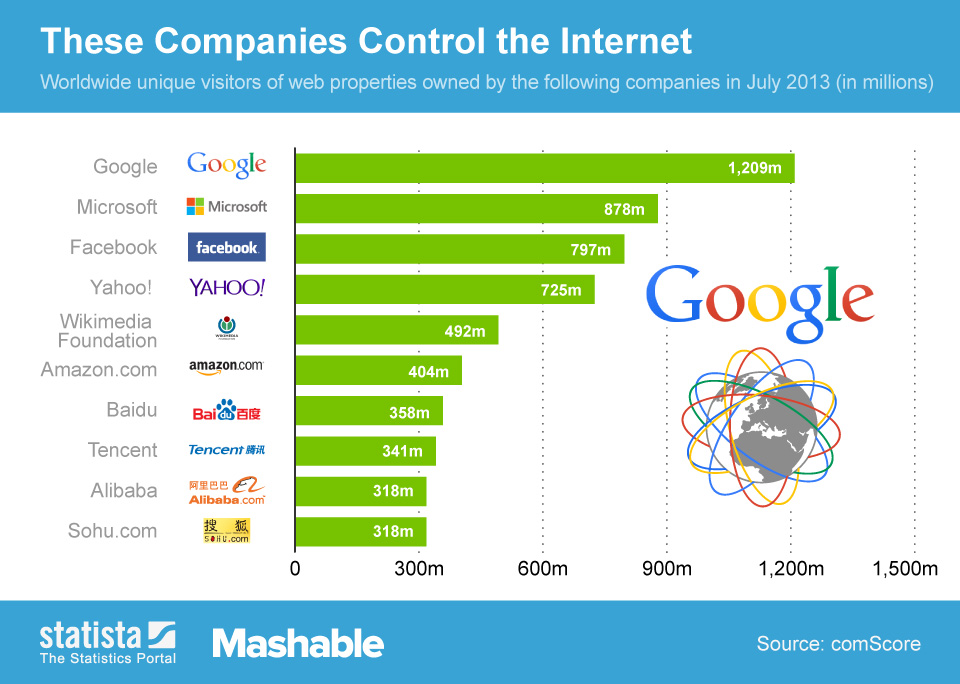
Winner take all:
L'ascension de ses services de leur influence, puissance de calcul ... a créer une économie en déclin ou le gagnant prend tout et est responsable de l’inégalité entre ses services. prenons l’exemple de l’industrie de musique ou tous les profits deviennent centralisés vers ses services au détriment des artistes et des créateurs alors que c'est eux qui créent de la vraie valeur.
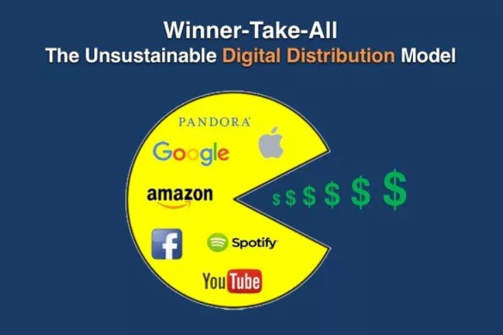
Appropriation des données:
On n’est plus propriétaire de nos données : on donne gratuitement nos données en échange de services gratuits ce qui marche assez bien mais en cela a des effets secondaires. nos données sont utilisé pour nous espionner ‘prenons l’exemple de prism avec edward snowden) , nos données sont commercialisés et prennent forme de publicités et de recommandations. parce qu’on leurs a donner le droit d’utiliser nos données et d’en faire des profits.Alors que c’est nous qu’on doit profiter de nos propres données.
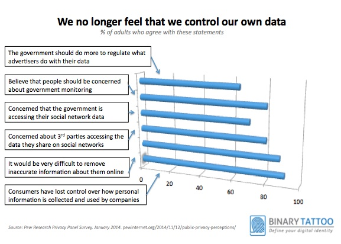
Manque de transparence:
Edward snowden à fait la une lorsque il a parlé du prism, le service de surveillance du de l’agence gouvernementale de NSA. et il l’a mis le doigt sur tous ses entreprises qui sont devenus des partenaires du NSA pour partager nos données (emails , chat ,vidéos ,images...) et on n’y peut rien , il n’y as pas de supervision de transparence avec ce qu’il font de nos données. ce qui est un problème
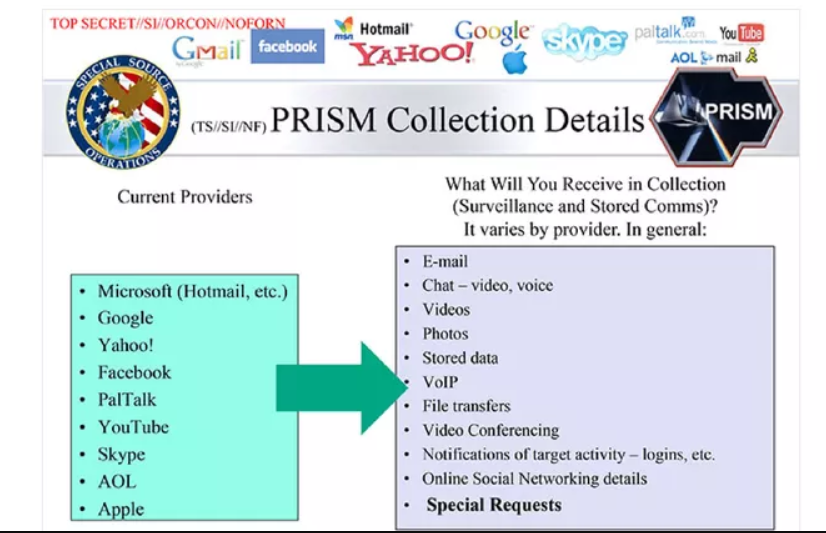
Impermanence des données:
Maintenant avec la manière on stocke nos données on peut les perdre à fur et à mesure. oui on stocke nos données dans des serveurs, oui on a des serveurs secondaires ou cas ou ses serveurs peut chuter. mais idéalement nos données doivent être dupliquées 100* à travers le web et ainsi il est impossible de supprimer nos données que ca soit volontairement ou accidentellement ce qui n’est pas le cas.
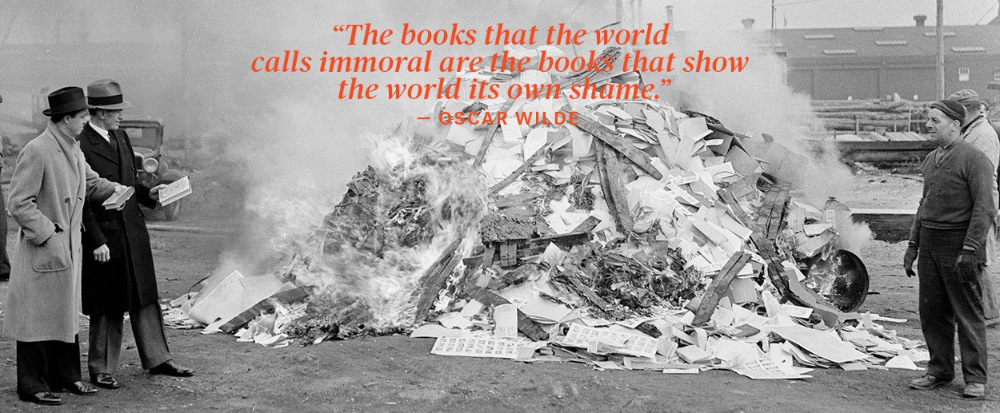
Les 6 fonctionnalités du web 3.0

- Web sémantique: Certains aiment résumer la chaîne du temps en expliquant qu’alors que le Web 1.0 était réservé aux informaticiens qui maîtrisaient l’HTML, le Web 2.0 désigne l’Internet communautaire qui permet à chacun de participer à un site, d’enrichir son contenu ou d’intégrer un réseau social. Et de poursuivre, qu’alors que le Web 2.0 désigne donc un web participatif, déjà intelligent et social, le Web 3.0 désignera un web « libre », « anonyme », jusque « activiste ». Donc activement intelligent!
- Intelligence artificielle: En combinant cette fonctionnalité avec le traitement du langage naturel, dans Web 3.0, les ordinateurs peuvent comprendre des informations comme des êtres humains afin de fournir des résultats plus rapides et plus pertinents. Ils deviennent plus intelligents pour satisfaire les besoins des utilisateurs.
- Ubiquité : Le contenu est accessible par plusieurs applications, chaque appareil est connecté au Web, les services peuvent être utilisés partout.
- Connectivité : Avec Web 3.0, l’information est plus connectée grâce aux métadonnées sémantiques. En conséquence, l'expérience utilisateur évolue vers un autre niveau de connectivité qui exploite toutes les informations disponibles.
- Graphiques 3D: La conception tridimensionnelle est largement utilisée dans les sites Web et les services Web 3.0. Les guides de musée, les jeux informatiques, le commerce électronique, les contextes géospatiaux, etc. sont tous des exemples utilisant des graphiques 3D.
- Réseaux décentralisés : Le web décentralisé, fondé sur les technologies blockchain, permet un retour de balancier après des années de centralisation où les GAFA se sont emparés du contrôle d’Internet.
Et c'est cette aspect du web décentralisé ou on va se focaliser en citant nottament les applications décentralisés et le rôles qu'ils jouent dans la révolution du web 3.0
Décentralisation ?

Le talon d’achille du web 2.0 reste et demeure la faible participation des internautes : la « règle des 1 % », qui prévaut jusqu’à présent dans plusieurs études sur les usages des services du web 2.0, dit que les 2/3 des contenus proviennent seulement d’1 % des utilisateurs actifs. Et cette proportion pourrait bien baisser encore un peu à mesure que l’audience des sites participatifs augmente.
Avec la venu du blockchain on a découvert que c’est possible de créer ce qu’on appelle des applications qui sont des applications qui ne peuvent pas être contrôler par un seule et unique entité.
Décentralisation du réseau :
Le principe de l'hybridité repose sur une architecture décentralisée du réseau. Cela signifie que, contrairement aux anciens modèles du peer-to-peer, qui étaient basés sur une relation de client à serveur, tous les nœuds d'une même toile forment les serveurs. L'intérêt provient d'une part d'éviter un nombre trop important de connexions sur une unique machine, d'éviter les temps de latence et une bande passante trop surchargée Il s'agit aussi de protéger le réseau : si l'un des serveurs tombe, pour quelque raison que ce soit, il est encore possible d'accéder et de sauvegarder des fichiers. Le réseau hybride, lui, combine les avantages de la centralisation et de la décentralisation des fichiers, en ne conservant qu'un certain nombre de nœuds, des « supers-noeuds », comme des serveurs.
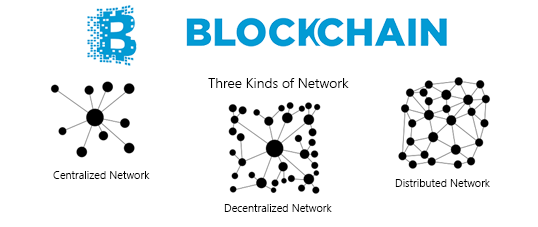
- web 1.0 : le réseau est centralisé sur un seul noeud , dépend sur un seul serveur
- web 2.0: réseau distribué : qui peut être centralisé mais qui peut être distribué , par exemple facebook qui ne dépend pas d’un seul serveur mais qui est contrôlé par une seule entité.
- web3.0: système décentralisé càd que si on prend n’importe quel noeud le système continue de fonctionner correctement. ce qui n’est pas le cas dans un système distribué qui est centralisé si on prend le noeud centrale.
Décentralisation des applications :
Avec la venu du blockchain on a découvert que c’est possible de créer ce qu’on appelle des applications qui sont des applications qui ne peuvent pas être contrôler par un seule et unique entité.
Applications opensource generatrices de profits :
On peut maintenant créer des applications open-source et génératrice de profits. ce qui n'a jamais été le cas auparavant: On pouvait avoir savoir des application open sources sans profits soit des applications propriétaires génératrices de profits.
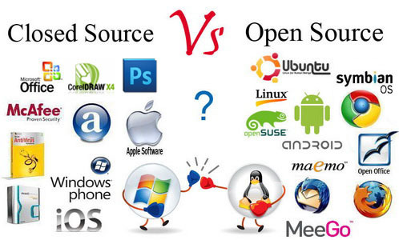
Communauté :
Ses applications peuvent gouvernées par leurs communautées en utilisant la technologie du blockchain où les utilisateurs peuvent voter et influencer directement au fonctionnement et au développement de l’application.
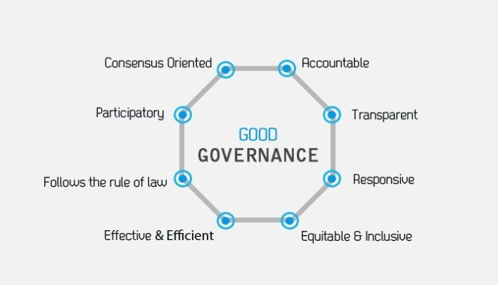
Applications résistances à la censure :
Ses applications décentralisés sont résistance à la censure. Voici un exemple ou l’apple store rejettent une certaine application car il ne respectent les lois législatives chinoise ou l’exemple du grand firewall chinois ou certaines applications comme facebook et google youtube ne peuvent pas pénétrer au réseau web chinois.
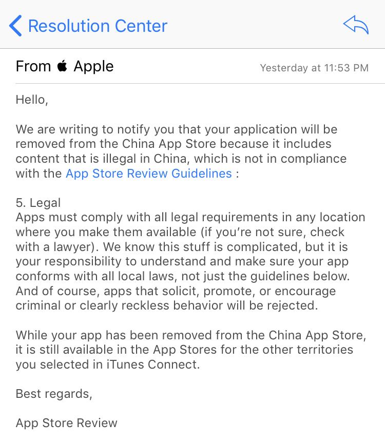
Le stack web 3.0 :

Le Web 3 est la nouvelle génération du Web dans laquelle les applications décentralisées (dApp) se superposent à une couche de données partagée. Les utilisateurs ont ainsi le contrôle de leurs données et la possibilité de passer d’une application à une autre avec des coûts de commutation faibles, voire nuls.
Réfléchissez au fonctionnement des domaines et des adresses électroniques. Nous (personnes et / ou entreprises) sommes propriétaires de ces éléments de données d'identification et nous pouvons les fournir dans n'importe quelle application de notre choix (je fournis mes adresses électroniques sous gmail et mes domaines sous wordpress, mais je pouvais choisir de nombreuses autres options). Dans Web 3, voici comment toutes nos données fonctionneront.
.png)
Conclusion :
L’infrastructure de Web 3 n’est pas encore arrivée à maturité et il lui faudra au moins quelques années être suffisamment stable pour permettre l’utilisation de dApps (decentralized apps ) stratégiques.
Nous pouvons entrevoir le Web 3 dans les jeux et les objets de collection, où les enjeux ne sont pas si élevés, et dans les services financiers qui se sont construits autour de Bitcoin et d’autres actifs de cryptage de premier plan. Mais il faudra un certain temps avant que nous conservions nos CV sur DinkedIn et nos documents sur DDocs, nos réseaux d’amis et familles sur Dacebook, nos photos et vidéos sur Dinstagram et les tweets de notre président sur Dwitter.
Mais ce moment viendra. Les dernières années du Web 2.0 nous ont montré ce qui ne va pas avec l'architecture actuelle du Web et ce que nous devons faire pour y remédier.